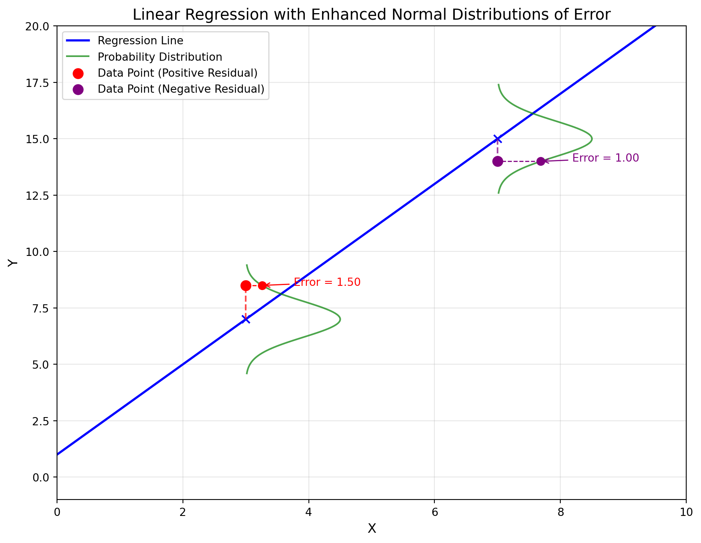

Without Priors
Preview
We finally flip to \(\mathcal{L}(M|D)\) the likelihood of a model given the observed data. In practice, we typically find \(\mathcal{L}(M|D)\) so that we can find the best parameter values for our chosen model type, although it could also be used to select between model types. We will describe what best is soon.
Like before, we begin with a simple dice model as we consider it to be an intuitive subject. We then work forward in generally the same order as the first half of the primer. We work with probability distributions and how to find the most likely parameters given the observed data. We pause to examine how likely we are to calculate one set of parameters when the true process has another set of parameters. As usual we use computation to avoid misunderstood analytical solutions.
Throughout the chapter we assume no prior knowledge of what the best model parameters may be - although in an app where you can guess and check you are probably not guessing randomly, which is already a hint at what a prior would be. In the next chapter we’ll formalize how to find optimal models when we have prior information about the parameter values. In more statistical terms, this chapter utilizes a Frequentist perspective and the next a Bayesian perspective.
Guessing the Best Model Parameter
In part one we wanted to understand the probability of the data based on a fixed model of a data generating process. In part two we use observed data to find the most likely model of the data generating process. Intuitively, this is just a model that generates or predicts data that is similar to our observed data. Subsequently we start with an intuitive excercise before diving further into the technical details.
The simple app below lets you select a model parameter, the number of dice to roll, such that you can see if your selection makes it match the data better or worse. See if you can find a parameter value that does a particularly good job of matching the data.
#| '!! shinylive warning !!': |
#| shinylive does not work in self-contained HTML documents.
#| Please set `embed-resources: false` in your metadata.
#| standalone: true
#| viewerHeight: 550
from shiny import App, ui, render, reactive
import numpy as np
import matplotlib.pyplot as plt
# --- Precompute the "permanent" histogram for 7 dice, 10,000 rolls ---
FIXED_NUM_DICE = 7
FIXED_NUM_ROLLS = 10000
fixed_sums = [np.random.randint(1, 7, FIXED_NUM_DICE).sum() for _ in range(FIXED_NUM_ROLLS)]
fixed_unique_vals, fixed_counts = np.unique(fixed_sums, return_counts=True)
app_ui = ui.page_fluid(
ui.h2("Dice Rolling Demo"),
ui.layout_sidebar(
ui.sidebar(
ui.input_slider(
"num_dice",
"Number of Dice (1–10)",
min=1,
max=10,
value=2,
step=1
),
),
ui.output_plot("dicePlot", height="400px"),
),
)
def server(input, output, session):
@reactive.Calc
def user_sums():
# Always roll the user-selected dice 10,000 times
N_ROLLS = 10000
n_dice = input.num_dice()
rolls = [np.random.randint(1, 7, n_dice).sum() for _ in range(N_ROLLS)]
return rolls
@output
@render.plot
def dicePlot():
# Get the user’s histogram
sums = user_sums()
user_unique_vals, user_counts = np.unique(sums, return_counts=True)
# Determine the union of x-values (totals) so both histograms can share the same axis
all_x = np.arange(
min(fixed_unique_vals[0], user_unique_vals[0]),
max(fixed_unique_vals[-1], user_unique_vals[-1]) + 1
)
# Convert the unique/value arrays to dictionaries for easy indexing
fixed_map = dict(zip(fixed_unique_vals, fixed_counts))
user_map = dict(zip(user_unique_vals, user_counts))
# Pull out frequency or 0 if total not present in the distribution
fixed_freqs = [fixed_map.get(x, 0) for x in all_x]
user_freqs = [user_map.get(x, 0) for x in all_x]
# Plot
fig, ax = plt.subplots()
# Bar chart for the fixed 7-dice histogram
ax.bar(all_x, fixed_freqs, color="lightblue", alpha=0.6, label="Fixed Dice")
# Overlay user histogram as points
ax.scatter(all_x, user_freqs, color="red", marker="o", label="User Selected Dice")
ax.set_title("Update the Input Parameter to Match Observations")
ax.set_xlabel("Dice Total")
ax.set_ylabel("Frequency")
ax.legend()
# Make x-axis tick at every possible total
plt.xticks(all_x, rotation=90)
return fig
app = App(app_ui, server)I’m guessing you succeeded. We want to be able to do that automatically, and with many more parameters, such that if we have data but aren’t certain about the model generating it, we can work in ‘reverse’ to find a likely model of the real world data generating process.
Likelihood
In our earlier dice example, we were just eyeballing the right model parameters to maximize the probability of observing our data under the model. We’d like a more consistent and mathematical way to achieve the same intent, which is maximizing a likelihood function. Its general form is:
\[ \mathcal{L}(\theta \mid \mathbf{y}) = \prod_{i=1}^{N} P(y_i \mid \theta) \]
\(\mathcal{L}(\theta \mid \mathbf{y})\) is likelihood of the model parameter[s] \(\theta\) given the observed data \(\mathbf{y}\).
\(P(y_i \mid \theta)\) is the probability (or probability density) of the \(i\)th data point given the parameters.
The product \(\prod_{i=1}^{N}\) assumes that the data points are independent. In practice, we often work with the log-likelihood (i.e., sum of log probabilities) for numerical stability.
Calculating \(P(y_i \mid \theta)\)
Performing the likelihood calculation described above hinges on being able to calculate \(P(y_i \mid \theta)\). To start, we assume we are using a model of a data generating process where the model is just a named parametric probability distribution. To have an example, let’s assume we are measuring the reliability of similar manufacturing lines across several different plants. Over the course of a year, there are a wide variety of unplanned shutdowns, with Line A having 7, Line B having 0, Line C having 2, etc. Across all the plants we want to know the most likely value for the rate of unplanned shutdowns, assuming our data follows a Poisson distribution.
So we can proceed with an example calculation, we simply try reasonable candidate model parameters. Based on a brief look at the data we think 5 is a reasonable rate per year, so \(\lambda = 5\) for our candidate model. To find \(P(y_i \mid \lambda = 5)\) for a single data point, we can use the app below which is similar to apps we used in the first half of the primer. We keep \(\lambda = 5\) in the app and try to find \(P(y_i=7 \mid \lambda = 5)\).
#| '!! shinylive warning !!': |
#| shinylive does not work in self-contained HTML documents.
#| Please set `embed-resources: false` in your metadata.
#| standalone: true
#| viewerHeight: 550
import numpy as np
import matplotlib.pyplot as plt
from scipy import stats
from shiny import App, ui, reactive, render
app_ui = ui.page_fluid(
ui.h2("Poisson Distribution Probability Calculator"),
ui.layout_sidebar(
ui.sidebar(
ui.input_slider(
"lambdaInput", "Rate (λ):",
min=1, max=10, value=5, step=1
),
ui.input_slider(
"xInput", "Value (y):",
min=0, max=15, value=5, step=1
),
ui.br(),
ui.h4("Probability:"),
ui.output_text("probOutput"),
width=300
),
# Main panel with plot
ui.output_plot("poissonPlot", height="400px"),
)
)
def server(input, output, session):
# Calculate probability P(X = x)
@reactive.Calc
def calculate_probability():
lam = input.lambdaInput()
x = input.xInput()
# Using PMF for P(X = x)
return stats.poisson.pmf(x, lam)
# Show the probability
@output
@render.text
def probOutput():
prob = calculate_probability()
return f"{prob:.4f}"
# Plot the Poisson PMF with highlighted bar
@output
@render.plot
def poissonPlot():
lam = input.lambdaInput()
x_val = input.xInput()
# Generate range of x values for plotting
x_max = max(int(lam*3), x_val + 10)
x_vals = np.arange(0, x_max + 1)
# Calculate PMF values
pmf_vals = stats.poisson.pmf(x_vals, lam)
fig, ax = plt.subplots(figsize=(10, 6))
# Plot all bars
bars = ax.bar(x_vals, pmf_vals, width=0.8, alpha=0.7, color='lightblue',
edgecolor='blue')
# Highlight the specific bar for P(X = x)
for i in range(len(x_vals)):
if x_vals[i] == x_val:
bars[i].set_color('red')
bars[i].set_alpha(0.7)
# Add text with probability
# prob = calculate_probability()
# ax.text(0.95, 0.95, f'P(X = {x_val}) = {prob:.4f}',
# transform=ax.transAxes, ha='right', va='top',
# bbox=dict(boxstyle='round', facecolor='white', alpha=0.8))
# Set integer ticks on x-axis
if len(x_vals) > 15:
# Display approximately 10-15 ticks at regular intervals
step = max(1, len(x_vals) // 10)
ax.set_xticks(x_vals[::step])
else:
ax.set_xticks(x_vals)
# Ensure x-axis limits provide proper spacing
ax.set_xlim(-0.6, x_max + 0.6)
ax.set_title(f"Poisson Distribution (λ={lam})")
ax.set_xlabel("y (number of events)")
ax.set_ylabel("Probability")
ax.grid(True, alpha=0.3)
# Single legend with clear explanation
from matplotlib.patches import Patch
legend_elements = [
Patch(facecolor='red', edgecolor='blue', alpha=0.7, label=f'Selected value (y = {x_val})')
]
ax.legend(handles=legend_elements, loc='upper right')
return fig
app = App(app_ui, server)Using the app \(P\) = 0.1044. Once we can find \(P(y_i \mid \theta)\) for one data point, we can do it for the rest and calculate \(\mathcal{L}(\theta \mid \mathbf{y})\). Of course, we have not yet maximized that likelihood function.
Estimating Maximum Likelihood with Discrete Data
If our goal is to get the Maximum Likelihood Estimate of a model’s parameters, the last example left a couple of things out:
- It did not calculate the likelihood for multiple data points.
- It did nothing to help us estimate the parameters that gave the maximum likelihood.
We will walk through another example that fills in these blanks. We’ll shift examples slightly, but we’ll still be modeling a data generating process for which simply using a named parametric distribution is a good fit. In this example we have a manufacturing process with a final quality control step. A batch of 1,000 products are manufactured and then tested. The table below shows the number that pass in each batch. We want to find the most likely value for the pass rate - i.e. we want to find the value of the probability (\(p\)) parameter in the binomial distribution that gives the maximum likelihood for the model.
Although the app below does not automatically give you the Maximum Likelihood Estimate, it will hopefully make it easy for you to approximate the value. Pick several \(p\) values you think are reasonable and for each select ‘Add to plot’.
| Batch Number | Passing |
|---|---|
| 1 | 992 |
| 2 | 995 |
| 3 | 989 |
| 4 | 998 |
#| '!! shinylive warning !!': |
#| shinylive does not work in self-contained HTML documents.
#| Please set `embed-resources: false` in your metadata.
#| standalone: true
#| viewerHeight: 600
import numpy as np
import matplotlib.pyplot as plt
from shiny import App, ui, reactive, render
from scipy.stats import binom
app_ui = ui.page_fluid(
ui.h3("For data above, what is the most likely pass probability?"),
# Input row
ui.row(
ui.column(
4,
ui.input_numeric(
"pInput", "Enter probability (p):",
value=0.993, min=0, max=1, step=0.001
),
),
ui.column(
4,
ui.br(),
ui.br(),
ui.input_action_button("addBtn", "Add to Plot"),
ui.input_action_button("resetBtn", "Reset", class_="btn-danger ms-2"),
),
ui.column(
4,
ui.input_action_button("showMleBtn", "Show MLE", class_="btn-primary"),
ui.output_text("mleOutput"),
),
),
ui.br(),
# Plots
ui.row(
ui.column(
6,
ui.output_plot("batchPlot"),
),
ui.column(
6,
ui.output_plot("probPlot"),
),
),
)
def server(input, output, session):
# Data for the four batches
batch_data = [(992, 1000), (995, 1000), (989, 1000), (998, 1000)] # (successes, trials)
# Store the user-selected probabilities and their log-likelihoods
stored_probs = reactive.Value([])
stored_lls = reactive.Value([])
# Flag to control MLE visibility
show_mle = reactive.Value(False)
# Calculate MLE estimate
total_success = sum(x[0] for x in batch_data)
total_trials = sum(x[1] for x in batch_data)
mle_p = total_success / total_trials
@output
@render.text
def mleOutput():
if show_mle.get():
return f"p = {mle_p:.6f}"
return ""
# Reset function
@reactive.Effect
@reactive.event(input.resetBtn)
def _():
stored_probs.set([])
stored_lls.set([])
show_mle.set(False)
# Toggle MLE display when button is clicked
@reactive.Effect
@reactive.event(input.showMleBtn)
def _():
show_mle.set(True)
# Add new probability when button is clicked
@reactive.Effect
@reactive.event(input.addBtn)
def _():
p = input.pInput()
if p not in stored_probs.get():
probs = list(stored_probs.get())
probs.append(p)
stored_probs.set(probs)
# Calculate cumulative log likelihood for this p
total_ll = 0
batch_lls = []
for success, trials in batch_data:
ll = binom.logpmf(success, trials, p)
total_ll += ll
batch_lls.append(total_ll)
lls = list(stored_lls.get())
lls.append((p, batch_lls))
stored_lls.set(lls)
@output
@render.plot
def batchPlot():
fig, ax = plt.subplots(figsize=(8, 6))
for p, batch_lls in stored_lls.get():
ax.plot(range(1, 5), batch_lls, 'o-', label=f'p={p:.3f}')
ax.set_xlabel('Batch Number')
ax.set_ylabel('Cumulative Log Probability')
ax.set_title('Cumulative Log Probability by Batch')
ax.grid(True)
# Set x-axis ticks to integers
ax.set_xticks(range(1, 5))
if stored_lls.get():
ax.legend()
return fig
@output
@render.plot
def probPlot():
fig, ax = plt.subplots(figsize=(8, 6))
if stored_lls.get():
# Sort the data by probability before plotting
sorted_data = sorted(stored_lls.get(), key=lambda x: x[0])
probs = [x[0] for x in sorted_data]
final_lls = [x[1][-1] for x in sorted_data]
ax.plot(probs, final_lls, 'o-')
# Only show MLE line if button has been clicked
if show_mle.get():
ax.axvline(mle_p, color='red', linestyle='--',
label=f'MLE (p={mle_p:.3f})')
ax.set_xlabel('Probability (p)')
ax.set_ylabel('Total Log Probability')
ax.set_title('Total Log Probability vs. p')
ax.grid(True)
if stored_lls.get():
ax.legend()
return fig
app = App(app_ui, server)Playing around with the app you should be able to see that the chart on the right, the ‘Total Log Probability vs p.’ has an obvious peak. What we want are parameter values that are the most probable, i.e. the ones with the largest total log probability. Here we can fairly easily pick random values, and maybe use some hints from the slope of the graph, to find a good estimate of \(p\). That strategy, which combines some guessing with observing the slope to find the most probable model is actually quite good - many state of the art methods are effectively very sophisticated versions of that same strategy.
Reinforcement for Calculating \(P(y_i \mid \theta)\)
Let’s again walkthrough calculating \(P(y_i \mid \theta)\) for one data point but with more detail. If we can do this successfully the other calculations are generally straightforward (and in practice are taken care of by a software package). Let’s remind ourselves how to calculate the probability of an observation that follows the Binomial probability distribution:
\[ P(y_i = k | n, p) = \binom{n}{k} p^k (1 - p)^{n - k} \]
where:
- \(k\) is the observed number of successes in \(n\) trials.
- \(p\) is the probability of success in each trial.
- (the n over k is ‘n choose k’, the binomial coefficient)
Our first data point is 992 successes, which equals \(k\), out of 1,000 trials, which equals \(n\). The best value of \(p\) is what we are unsure about, and our current strategy is to strategically try some values to try to understand the problem. Let’s assume we tried \(p\) = 0.995 as a reasonable guess. The calculation is:
\[ P(y_i = 992 | n = 1000, p = 0.995) = \binom{1000}{992} (0.995)^{992} (0.005)^8 = 0.0652 \]
The result is that the 992 data point has a probability of 0.0652, if we assume n=1000 and p=0.995. That value is about -2.73 using the natural log or -1.19 using log base 10. In the app above, if you select p=0.995 and select ‘Add to Plot’, the value of the first point/batch, which corresponds to k=992, has a value of about -2.73.
Other Things to Note
Difference between \(\mathcal{L}(M|D)\) and \(P(D|M)\)
You may be asking yourself - what is the difference between what we are doing here and what we did in the first half of the primer when we calculated P(D|M)?
The difference is we have a goal. We use the probability of the data as a metric we can optimize to find the best model parameters. We optimize the parameters until we find the best model, i.e the one with the Maximum Likelihood Estimate. So in summary, the calculation of the probabilities is the same - the difference is we use an optimization strategy to find the best \(\mathcal{L}(M|D)\).
FYI on the Analytical Solution
Although we’ve mostly avoided them, analytical solutions can be very useful. For one they are typically very fast to compute. And secondly, they can be a nice verification that approximate/numerical methods converge to reasonable solutions, for at least some set of circumstances.
For the Binomial distribution there’s actually a simple analytical solution, and while it may seem simple in hindsight, the proper derivation is maybe more complex than you’d expect… The basic idea is that the derivative of the ‘Total Log Probability vs p.’ chart will equal zero at the maximum probability. After a brief drum roll we can reveal that the most likely estimate of p is ……. just the average success rate. More precisely, the successes divided by the total n, e.g. (992 + 995 + 989 + 998)/(1,000 + 1,000 + 1,000 + 1,000).
Computational Strategies for finding the Maximum Likelihood Estimate
Analytical solutions are not common for real-world problems, so we consider some computational strategies for finding the Maximum Likelihood Estimate.
Grid Search
Grid search is a straightforward optimization technique that divides the parameter space into a finite set of discrete values. For example, when estimating the parameter \(p\) in a binomial model (where \(p\) can range from 0 to 1), you might consider values such as 0.01, 0.02, …, 0.98, 0.99. For each candidate value, you compute the likelihood (or log-likelihood) of observing your data. The optimal parameter estimate, denoted as \(\hat{p}_{\text{grid}}\), is the value from the grid \(G\) that maximizes the likelihood:
\[ \hat{p}_{\text{grid}} = \arg\max_{p_i \in G} \mathcal{L}(p_i \mid n, k) \]
This notation means that \(\hat{p}_{\text{grid}}\) is the value \(p_i\) in \(G\) for which the likelihood \(\mathcal{L}(p_i \mid n, k)\) is highest—in other words, the optimum value derived from the grid search.
While grid search is attractive for its simplicity, it doesn’t scale well with multiple parameters. As you add more parameters, the number of parameter combinations increases exponentially (a phenomenon known as the “curse of dimensionality”). For instance, if you discretize each parameter into 100 values, two parameters would require checking \(100^2 = 10,000\) combinations, and three parameters would involve \(100^3 = 1,000,000\) combinations, quickly becoming computationally prohibitive.
Gradient Ascent
To manually estimate the Maximum Likelihood for the binomial probability problem, we created a chart that had an obvious peak at the Maximum Likelihood Estimate. If we want to find that peak we simply need to walk/step up the hill. This is the idea of using gradients/derivatives to make our calculation more efficient.
This approach is excellent even for many parameters, so we jump right to the definition for multi-parameter spaces. We seek to compute the gradient of \(f(\theta)\) with respect to \(\theta\) so we can use it in an optimization algorithm:
\[ \nabla f(\theta) = \left[ \frac{\partial f}{\partial \theta_1}, \frac{\partial f}{\partial \theta_2}, \dots, \frac{\partial f}{\partial \theta_n} \right] \]
We use the resulting gradient to take a step towards the nearest optimum with learning rate \(\eta\):
\[ \theta^{(t+1)} = \theta^{(t)} - \eta \nabla f(\theta^{(t)}) \]
where \(t\) is the iteration index.
The use of gradients/derivatives forms a core piece of most modern optimization methods. The methods that use these gradients/derivatives are so effective, practitioners will go to great lengths to ensure that the gradients/derivatives can be calculated for their problem. This fact has given birth to many ‘autograd’ libraries that efficiently find derivatives in very complex problem domains. Modern neural networks are possible due to efficient matrix multiplication and gradient/derivative estimation (well, and GPU’s that go brrrrrrr).
Maximum Likelihood Estimate with Continuous Data
We move on to continuous data and continuous probability distributions, but with the same goal of finding the model parameters that maximize the likelihood of the observed data. The methods remain the same. The only difference we should keep in mind is that when we calculate \(P(y_i \mid \theta)\), with a continuous probability distribution, it is a probability density, and not a true probability. However, since probability densities can still be used to compare relative probability, and we are only trying to find the model parameter values that are the most likely relative to all other possibilities, this nuance has little practical impact.
Normal Distribution with MLE Estimate
The following is a very similar app to what we saw in the chapter on Continuous Probability Distributions, where we just calculated the relative probability of continuous data. However, this time we also have ability to find the most likely model parameter values to explain the data, i.e the Maximimum Likelihood Estimate.
#| '!! shinylive warning !!': |
#| shinylive does not work in self-contained HTML documents.
#| Please set `embed-resources: false` in your metadata.
#| standalone: true
#| viewerHeight: 700
import math
import numpy as np
import matplotlib.pyplot as plt
from shiny import App, ui, reactive, render
app_ui = ui.page_sidebar(
# Sidebar with user inputs (labels removed)
ui.sidebar(
ui.input_slider(
"muInput", "Mean (μ):",
min=90, max=110, value=103, step=0.1
),
ui.input_slider(
"varInput", "Variance (σ²):",
min=1, max=20, value=7, step=0.1
),
ui.hr(),
ui.input_action_button("mleBtn", "MLE", class_="btn-primary"),
ui.input_action_button("addToMlePlotBtn", "Add to MLE Plot", class_="btn-info"),
ui.input_action_button("resetBtn", "Reset", class_="btn-warning"),
),
# Main panel with tabs for plots
ui.panel_title("Likelihood Calculation"),
ui.navset_tab(
ui.nav_panel("Normal PDF",
# Moved Current Data and Log-Likelihood here
ui.row(
ui.column(6,
ui.h4("Current Data (Y):"),
ui.output_text_verbatim("dataText")
),
ui.column(6,
ui.h4("Current Log-Likelihood:"),
ui.output_text_verbatim("logLikelihoodText")
)
),
ui.output_plot("normalPlot", height="450px")
),
ui.nav_panel("Cumulative Log Probability",
ui.output_plot("cumLogProbPlot", height="500px")
),
ui.nav_panel("MLE Estimate",
ui.output_plot("mlePlot", height="500px")
)
)
)
def server(input, output, session):
# Fixed number of samples
SAMPLE_SIZE = 7
# Initialize data with 7 random points
data_vals = reactive.Value(
np.random.normal(loc=100, scale=np.sqrt(10), size=SAMPLE_SIZE)
)
# Store MLE points for the MLE plot - each point is (mu, var, likelihood)
mle_points = reactive.Value([])
# Generate a new sample and reset MLE points when 'Reset' is pressed
@reactive.Effect
@reactive.event(input.resetBtn)
def _():
data_vals.set(
np.random.normal(loc=100, scale=np.sqrt(10), size=SAMPLE_SIZE)
)
mle_points.set([])
# Display the current data
@output
@render.text
def dataText():
y = data_vals()
return ", ".join(str(round(val, 1)) for val in y)
# Show the log-likelihood
@output
@render.text
def logLikelihoodText():
ll = log_likelihood()
return f"{round(ll, 2)}"
# When 'MLE' is clicked, update muInput and varInput to MLE estimates
@reactive.Effect
@reactive.event(input.mleBtn)
def _():
y = data_vals()
n = len(y)
mle_mean = np.mean(y)
mle_var = np.sum((y - mle_mean)**2) / n
session.send_input_message("muInput", {"value": mle_mean})
session.send_input_message("varInput", {"value": mle_var})
# Add current mu, var, and likelihood to MLE points
@reactive.Effect
@reactive.event(input.addToMlePlotBtn)
def add_to_mle_plot():
mu = input.muInput()
var = input.varInput()
ll = log_likelihood()
# Create a new list with the current points plus the new one
current_points = mle_points()
new_points = current_points.copy()
new_points.append((mu, var, ll))
mle_points.set(new_points)
# Reactive expression for log-likelihood
@reactive.Calc
def log_likelihood():
y = data_vals()
mu = input.muInput()
var = input.varInput()
n = len(y)
if var <= 0:
return float("nan")
term1 = -0.5 * n * math.log(2 * math.pi * var)
term2 = -0.5 * np.sum((y - mu)**2) / var
return term1 + term2
# Plot the normal PDF and data points
@output
@render.plot
def normalPlot():
y = data_vals()
mu = input.muInput()
var = input.varInput()
sigma = math.sqrt(var)
x_min = min(y) - 3 * sigma
x_max = max(y) + 3 * sigma
x_vals = np.linspace(x_min, x_max, 200)
pdf_vals = (1.0 / (sigma * np.sqrt(2 * math.pi))) * np.exp(
-0.5 * ((x_vals - mu) / sigma)**2
)
fig, ax = plt.subplots(figsize=(10, 6))
ax.plot(
x_vals, pdf_vals,
color="blue",
label=f"Normal PDF (μ={round(mu,1)}, σ²={round(var,1)})"
)
# Scatter the data at y=0 with some jitter
jittered = y + np.random.uniform(-0.1, 0.1, size=len(y))
ax.scatter(jittered, np.zeros_like(y), color="darkgreen", alpha=0.7, label="Data points")
ax.axvline(mu, color="gray", linestyle="--")
ax.set_title("Normal PDF vs. Observed Data")
ax.set_xlabel("Y")
ax.set_ylabel("Density")
ax.legend()
ax.set_ylim(bottom=0)
plt.tight_layout()
return fig
# Plot the cumulative log probability
@output
@render.plot
def cumLogProbPlot():
y = data_vals()
mu = input.muInput()
var = input.varInput()
sigma = math.sqrt(var)
# Sort data points for plotting
sorted_indices = np.argsort(y)
sorted_y = y[sorted_indices]
# Calculate log probabilities
log_probs = -0.5 * np.log(2 * math.pi * var) - 0.5 * ((sorted_y - mu) / sigma)**2
cum_log_probs = np.cumsum(log_probs)
fig, ax = plt.subplots(figsize=(10, 6))
ax.plot(sorted_y, cum_log_probs, 'b-', marker='o')
ax.set_title("Cumulative Log Probability")
ax.set_xlabel("Data Points")
ax.set_ylabel("Cumulative Log Probability")
ax.grid(True)
plt.tight_layout()
return fig
# Plot the MLE estimates
@output
@render.plot
def mlePlot():
points = mle_points()
fig, ax = plt.subplots(figsize=(10, 6))
if points:
mu_values = [p[0] for p in points]
var_values = [p[1] for p in points]
ll_values = [p[2] for p in points]
# Create a scatter plot with color based on log-likelihood
scatter = ax.scatter(mu_values, var_values, c=ll_values, cmap='viridis',
s=100, alpha=0.7, edgecolors='k')
# Add colorbar
cbar = fig.colorbar(scatter)
cbar.set_label('Log-Likelihood')
# Add numbers to points
for i, (x, y) in enumerate(zip(mu_values, var_values)):
ax.text(x, y, str(i+1), color='white', ha='center', va='center', fontweight='bold')
# Annotate the maximum likelihood point
max_idx = np.argmax(ll_values)
ax.scatter(mu_values[max_idx], var_values[max_idx], s=200,
facecolors='none', edgecolors='red', linewidths=2)
ax.text(mu_values[max_idx] + 2, var_values[max_idx],
f"Max: ({mu_values[max_idx]:.1f}, {var_values[max_idx]:.1f}, L={ll_values[max_idx]:.2f})",
color='red', fontweight='bold')
else:
ax.text(0.5, 0.5, "Click 'Add to MLE Plot' to add points",
ha='center', va='center', transform=ax.transAxes, fontsize=14)
ax.set_title("MLE Estimate Plot")
ax.set_xlabel("Mean (μ)")
ax.set_ylabel("Variance (σ²)")
ax.grid(True)
plt.tight_layout()
return fig
app = App(app_ui, server)
It’s quite a bit harder to optimize two parameters by hand, but you can always see the Maximium Likelihood Estimate by clicking the ‘MLE’ button. The true distribution from which the data was generated had a mean of 100 and a standard deviation of 10. You may notice that with just 7 data points, the Maximum Likelihood Estimate can vary notably from those values.
Also, while there are some good reasons in statistical analysis to default to using normal/gaussian distributions, it’s somewhat dangerous to the extent it has implicitly permeated many analyses. Please just keep this in mind when tackling ‘real-world’ problems.
Statistical Models/Linear Regression
So far this chapter we’ve focused on models/data generating processes that could be adequately described with just parametric probability distributions. Here we move on to statistical models conditioned on data, e.g. \(P(y_i | x_i)\), like we did in the first half of the primer. As a reminder, data allowed us to zoom in on a part of the sample space and make better estimates of the parameters of the probability distribution at that location. Again, as a reminder, here was our preferred notation for traditional (constant variance) linear regression:
\[ P(y_i \mid x_i) \sim \mathcal{N}(\beta_0 + \beta_1 x_i, \sigma^2) \]
This notation makes it clear that our estimate for \(y_i\) is a probability distribution centered around the linear predictor \(\beta_0 + \beta_1 x_i\). This formulation also highlights that while our model provides a deterministic estimate for the mean response at \(x_i\), individual observations vary due to randomness captured by the [constant] variance \(\sigma^2\).
If we define the predicted value as \(\hat{y}_i = \beta_0 + \beta_1 x_i\), then the error for each observation is
\[ \epsilon_i = y_i - \hat{y}_i, \]
Where \(y_i\) is the observed data and \(\hat{y}_i\) is the prediction. By our model assumption, these errors follow a normal distribution:
\[ \epsilon_i \sim \mathcal{N}(0, \sigma^2) \]
This simply means we assume the error (difference between data point and prediction) are centered at our prediction (the mean equals zero), and have a variance of \(\sigma^2\). We can now find \(P(y_i \mid \theta)\) for each data point, which means we can also find the Maximum Likelihood Estimate of the model parameters (\(\beta_0\), \(\beta_1\)… \(\sigma\)).
A visual here can be very helpful. For each data point we calculate its probability like in the chart below. Every observation has a ‘sideways’ normal distribution centered (\(\epsilon_i \sim \mathcal{N}(0, \sigma^2)\)) at the prediction, and the probability of the point is based on how far out it would land on that normal distribution.
Maximum Likelihood with Constant Normal Variance
We take an unusual detour for the primer and derive the solution for maximizing likelihood with constant normal variance. This is important because of the result, as indicated by the callout at the end of the derivation. Also, rest assured that derivations are not needed to solve practical problems, solutions can be found numerically by just maximizing the results of the raw/original likelihood calculation (like you did in earlier examples).
Sum of Squared Errors Derivation
The probability density function (PDF) of a normal distribution is:
\[ p(x_i | \mu, \sigma^2) = \frac{1}{\sqrt{2\pi\sigma^2}} \exp \left( -\frac{(x_i - \mu)^2}{2\sigma^2} \right) \]
The likelihood function for the entire dataset is the product of individual probabilities:
\[ L(\mu, \sigma^2) = \prod_{i=1}^{n} \frac{1}{\sqrt{2\pi\sigma^2}} \exp \left( -\frac{(x_i - \mu)^2}{2\sigma^2} \right) \]
By taking the natural logarithm and rearraging we can arrive at:
\[ \log L(\mu, \sigma^2) = -\frac{n}{2} \log (2\pi\sigma^2) - \frac{1}{2\sigma^2} \sum_{i=1}^{n} (x_i - \mu)^2 \]
If we assume constant variance the first term, \(-\frac{n}{2} \log (2\pi\sigma^2)\) and \(\frac{1}{2\sigma^2}\) is constant. So we simply need to minimize the second term, which is the sum of squared errors (SSE):
\[ \sum_{i=1}^{n} (x_i - \mu)^2 \]
Important
It is very common to see optimizations that minimize the squared error. You should recognize that this is implicitly assuming that the errors are normally distributed.
Example App
The app below allows you to visualize the sum of squares error. You can try minimizing the total squared error by altering the parameters of the regression. When you are ready you can see the parameter values that maximizes the likelihood by clicking on the MLE button.
#| '!! shinylive warning !!': |
#| shinylive does not work in self-contained HTML documents.
#| Please set `embed-resources: false` in your metadata.
#| standalone: true
#| viewerHeight: 800
import math
import numpy as np
import matplotlib.pyplot as plt
from shiny import App, ui, reactive, render
app_ui = ui.page_sidebar(
# Sidebar with all user inputs
ui.sidebar(
ui.h3("Model Parameters"),
ui.input_slider(
"alphaInput", "Intercept (α):",
min=-10, max=10, value=0, step=0.1
),
ui.input_slider(
"betaInput", "Slope (β):",
min=-5, max=5, value=1, step=0.1
),
ui.input_slider(
"varInput", "Variance (σ²):",
min=0.01, max=2, value=1, step=0.01
),
ui.input_slider(
"nInput", "Number of samples:",
min=5, max=20, value=10, step=1
),
ui.input_checkbox("showResiduals", "Show residuals as squares", value=True),
ui.br(),
ui.row(
ui.column(
6,
ui.input_action_button("mleBtn", "MLE", class_="btn-primary"),
),
ui.column(
6,
ui.input_action_button("newSampleBtn", "NEW SAMPLE", class_="btn-secondary"),
),
),
width="300px"
),
# Main content
ui.h2("Linear Regression Likelihood"),
ui.row(
ui.column(
6,
ui.h4("Current Data (X, Y):"),
ui.output_text_verbatim("dataText"),
),
ui.column(
6,
ui.h4("Model Statistics:"),
ui.output_text("statsOutput"),
),
),
ui.br(),
# Plot
ui.output_plot("regressionPlot", height="500px"),
)
def server(input, output, session):
# Reactive value to store X and Y
data_vals = reactive.Value(None)
# Function to generate linear-regression data
def generate_data(n, alpha, beta, var):
# For simplicity, let X be a random uniform(0, 10)
X = np.random.uniform(0, 10, size=n)
# Y = alpha + beta*X + noise
Y = alpha + beta*X + np.random.normal(0, np.sqrt(var), size=n)
return X, Y
# Initialize data once
data_vals.set(generate_data(10, 0, 1, 1))
# Generate a new sample when 'NEW SAMPLE' is pressed
@reactive.Effect
@reactive.event(input.newSampleBtn)
def _():
n = input.nInput()
alpha = input.alphaInput()
beta = input.betaInput()
var = input.varInput()
data_vals.set(generate_data(n, alpha, beta, var))
# Display the current data
@output
@render.text
def dataText():
X, Y = data_vals()
# Show a few decimal places
pairs_str = [
f"({round(xi,1)}, {round(yi,1)})" for xi, yi in zip(X, Y)
]
return ", ".join(pairs_str)
# When 'MLE' is clicked, compute OLS estimates and update alpha, beta, var
@reactive.Effect
@reactive.event(input.mleBtn)
def _():
X, Y = data_vals()
n = len(Y)
# Compute MLE (which in classical linear regression is the OLS solution)
X_mean = np.mean(X)
Y_mean = np.mean(Y)
# beta_hat = Cov(X,Y)/Var(X)
beta_hat = np.sum((X - X_mean)*(Y - Y_mean)) / np.sum((X - X_mean)**2)
# alpha_hat = mean(Y) - beta_hat*mean(X)
alpha_hat = Y_mean - beta_hat*X_mean
# var_hat = (1/n) * sum((y_i - alpha_hat - beta_hat*x_i)^2)
residuals = Y - (alpha_hat + beta_hat*X)
var_hat = np.sum(residuals**2) / n
# Update the UI sliders
session.send_input_message("alphaInput", {"value": alpha_hat})
session.send_input_message("betaInput", {"value": beta_hat})
session.send_input_message("varInput", {"value": var_hat})
# Reactive expression for log-likelihood
@reactive.Calc
def log_likelihood():
X, Y = data_vals()
alpha = input.alphaInput()
beta = input.betaInput()
var = input.varInput()
n = len(Y)
if var <= 0:
return float("nan")
# Compute sum of squared residuals
residuals = Y - (alpha + beta*X)
ssr = np.sum(residuals**2)
# log-likelihood for linear regression
term1 = -0.5 * n * math.log(2 * math.pi * var)
term2 = -0.5 * (ssr / var)
return term1 + term2
# Calculate sum of squared errors
@reactive.Calc
def sum_squared_errors():
X, Y = data_vals()
alpha = input.alphaInput()
beta = input.betaInput()
residuals = Y - (alpha + beta*X)
return np.sum(residuals**2)
# Show the log-likelihood and SSE
@output
@render.text
def statsOutput():
ll = log_likelihood()
sse = sum_squared_errors()
return ui.HTML(f"Log-Likelihood: {round(ll, 2)}, and the Sum of Squared Errors: {round(sse, 2)}")
# Plot the data and the regression line
@output
@render.plot
def regressionPlot():
X, Y = data_vals()
alpha = input.alphaInput()
beta = input.betaInput()
var = input.varInput()
show_residuals = input.showResiduals()
fig, ax = plt.subplots(figsize=(10, 6))
# Plot data points
ax.scatter(X, Y, color="blue", alpha=0.7, label="Data")
# Plot regression line from min(X) to max(X)
x_min, x_max = np.min(X), np.max(X)
x_vals = np.linspace(x_min, x_max, 100)
y_vals = alpha + beta * x_vals
ax.plot(x_vals, y_vals, color="red", label=f"Line (α={round(alpha,2)}, β={round(beta,2)})")
# Draw residual squares if enabled
if show_residuals:
y_pred = alpha + beta * X
residuals = Y - y_pred
for x, y, res in zip(X, Y, residuals):
y_on_line = y - res # Point on the regression line
# Create square vertices
if res >= 0: # Point above the line (positive residual)
square = plt.Rectangle((x, y_on_line), abs(res), abs(res),
fill=False, color='green', alpha=0.7)
else: # Point below the line (negative residual)
square = plt.Rectangle((x, y), abs(res), abs(res),
fill=False, color='green', alpha=0.7)
ax.add_patch(square)
ax.set_title("Linear Regression Fit")
ax.set_xlabel("X")
ax.set_ylabel("Y")
ax.legend()
ax.grid(True)
return fig
app = App(app_ui, server)Motivation for Bayesian (With Prior) Methods
If you’ve followed the general development of topics from the first half of the primer, this is where the discussion on Bayesian models slots in. We have, however, dedicated a separate chapter to this topic which is finding the likelihood of models ‘With Priors’.
Regardless, we stop a moment to contemplate the need for these Bayesian methods. ‘Priors’ refers to having prior information (or beliefs) about the parameter values. This can be very useful, especially if you understand the data generating process but have not been able to collect a large amount of data. They can be controversial, however, if not well defended. These points are long discussed in statistical literature.
The point we would like to make here is that once you get past some reasonable starting point for the prior parameter values, you open up an extremely attractive computational framework. In this framework the model parameter values are sampled probabilistically - you do not simply find a single most likely value at the top of the hill - you find a range of parameter values with different plausibilities 1. A major advantage is the methods to find optimum parameter values end up being extremely general. You can define all sorts of custom models, and modern Bayesian sampling will give you plausible parameter values for your models, including the spread/confidence in those parameter values.
But again, we wait a chapter.
Machine Learning
Warning
This section is incomplete. It’s interesting material, but for the core purpose of the primer, it’s hard to prioritize for a v0 release.
We again visit machine learning, but now have additional background/terminology for distinguishing it from the statistical models we’ve otherwise discussed.
Loss Function
The parameters of a machine learning model are optimized via a loss function. A loss function, denoted as \(L\), is typically computed as the difference between the true target values \(y\) (it’s machine learning so we say target instead of observed…) and the predicted values \(\hat{y}\). The generic form of a loss function can be expressed as:
\[ L(y, \hat{y}) = \frac{1}{N} \sum_{i=1}^{N} \ell(y_i, \hat{y}_i) \]
Variables:
- \(y_i\): The true value for the (i)-th data point.
- \(\hat{y}_i\): The predicted value for the (i)-th data point.
- \(\ell(y_i, \hat{y}_i)\): The individual error for the (i)-th data point defined by the loss function.
- \(N\): The total number of data points.
The function \(\ell(y_i, \hat{y}_i)\) depends on the task.
Comparison to Likelihood Function
Loss functions are more general than the Maximum Likelihood Estimate usually used in statistical models. They may or may not be based on probabilities and may or may not be equivalent to the Maximum Likelihood Estimate.
Training a Simple Neural Network
In the first half we developed the structure of a neural network and let it generate data, but we did not train it. Training a neural network, is unfortunately, probably the hardest part of the whole package.
Model Architecture
The neural network we’ll eventually train in the app further below consists of:
- Input layer: 1 neuron (diamond carat)
- Hidden layer 1: \(h_1\) neurons (user-configurable)
- Hidden layer 2: \(h_2\) neurons (user-configurable)
- Output layer: 1 neuron (predicted price)
Loss Function
The model minimizes the Mean Squared Error (MSE) loss:
\[\mathcal{L}(\mathbf{W}, \mathbf{b}) = \frac{1}{m} \sum_{i=1}^{m} (\hat{y}^{(i)} - y^{(i)})^2\]
Where: - \(m\) is the number of training examples - \(\hat{y}^{(i)}\) is the predicted value for the \(i\)-th example - \(y^{(i)}\) is the actual value for the \(i\)-th example
Parameter Estimation Process
Gradient Descent
The parameters are updated iteratively using gradient descent:
\[\mathbf{W}^{[l]} = \mathbf{W}^{[l]} - \alpha \frac{\partial \mathcal{L}}{\partial \mathbf{W}^{[l]}}\] \[\mathbf{b}^{[l]} = \mathbf{b}^{[l]} - \alpha \frac{\partial \mathcal{L}}{\partial \mathbf{b}^{[l]}}\]
Where \(\alpha\) is the learning rate (fixed at 0.01 in our implementation).
Activation Function Derivatives
ReLU Derivative: \[g^{\prime}_{\text{ReLU}}(z) = \begin{cases} 1 & \text{if } z > 0 \\ 0 & \text{otherwise} \end{cases}\]
Logistic Sigmoid Derivative: \[g^{\prime}_{\text{sigmoid}}(z) = \sigma(z)(1-\sigma(z))\] where \(\sigma(z) = \frac{1}{1+e^{-z}}\)
Initialization Strategy
The weights are initialized using the initialization for ReLU or standard normal scaled by the square root of layer size:
\[\mathbf{W}^{[l]} \sim \mathcal{N}\left(0, \sqrt{\frac{2}{n^{[l-1]}}}\right)\]
Where \(n^{[l-1]}\) is the number of neurons in the previous layer.
Training Process
- Standardization: Input and output data are standardized to have zero mean and unit variance
- Iterations: The model is trained for a user-specified number of epochs
- Parameter Updates: After each forward pass, parameters are updated via backpropagation
- Convergence: Training continues until the specified number of epochs is completed
The final parameter values displayed in the “Model Parameters” tab represent the optimized weights and biases that minimize the MSE loss on the training data.
#| '!! shinylive warning !!': |
#| shinylive does not work in self-contained HTML documents.
#| Please set `embed-resources: false` in your metadata.
#| standalone: true
#| viewerHeight: 600
from shiny import App, ui, render, reactive
import numpy as np
import matplotlib.pyplot as plt
import pandas as pd
from io import StringIO
# Data (an excerpt from the diamond dataset)
data_str = """ID,carat,cut,color,clarity,depth,table,price,x,y,z
51657,0.3,Ideal,G,VS2,62.3,58.0,545,4.26,4.28,2.66
34838,0.3,Premium,G,VVS2,60.8,58.0,878,4.38,4.34,2.65
9718,0.3,Ideal,H,VVS2,62.1,54.0,590,4.32,4.35,2.69
46635,0.3,Very Good,E,SI1,62.7,60.0,526,4.24,4.28,2.67
31852,0.3,Premium,G,VS1,62.2,59.0,776,4.28,4.24,2.65
40942,0.27,Ideal,H,VS1,62.3,54.0,500,4.16,4.19,2.6
49960,0.3,Good,H,SI1,63.7,56.0,540,4.22,4.2,2.68
30300,0.3,Very Good,D,SI2,61.0,61.0,447,4.25,4.31,2.61
15051,0.3,Ideal,F,VS2,61.4,57.0,605,4.34,4.36,2.67
32272,0.3,Very Good,G,VVS1,62.9,57.0,789,4.26,4.3,2.69
16695,0.3,Very Good,H,SI1,62.6,58.0,421,4.22,4.28,2.66
32358,0.3,Good,G,VVS1,63.1,56.0,789,4.25,4.28,2.69
3393,0.27,Very Good,E,VVS2,59.4,64.0,567,4.16,4.19,2.48
16027,0.3,Premium,I,VS1,60.5,60.0,608,4.33,4.3,2.61
5721,0.25,Very Good,E,VVS2,60.9,59.0,575,4.03,4.11,2.48
34695,0.3,Ideal,F,IF,61.7,56.0,873,4.31,4.35,2.67
28794,0.27,Very Good,F,VVS2,61.3,57.0,682,4.14,4.18,2.54
32496,0.3,Good,F,IF,58.8,61.0,796,4.35,4.39,2.57
16359,0.3,Good,D,VS2,64.1,57.0,608,4.25,4.21,2.71
31973,0.3,Very Good,I,VS2,60.5,55.0,453,4.34,4.37,2.63
51312,0.31,Ideal,G,VS2,59.1,57.0,544,4.45,4.48,2.64
27844,0.31,Very Good,G,VS2,63.2,58.0,651,4.3,4.28,2.71
37309,0.31,Ideal,F,IF,62.2,56.0,979,4.31,4.34,2.69
16685,0.31,Ideal,H,SI2,61.1,56.0,421,4.4,4.42,2.69
35803,0.31,Premium,F,IF,61.9,58.0,914,4.36,4.39,2.71
30256,0.31,Very Good,E,VVS1,60.4,61.0,725,4.34,4.4,2.64
36008,0.31,Ideal,F,IF,61.2,56.0,921,4.37,4.42,2.69
30803,0.31,Good,F,VVS1,63.6,61.0,742,4.21,4.25,2.69
32676,0.31,Premium,G,VS1,62.4,59.0,802,4.34,4.32,2.7
35593,0.31,Ideal,H,VVS1,62.2,54.0,907,4.39,4.36,2.72
20386,0.31,Premium,G,VS1,59.5,59.0,625,4.4,4.47,2.64
34570,0.31,Ideal,G,IF,61.0,55.0,871,4.39,4.42,2.69
33609,0.31,Ideal,D,SI2,62.0,56.0,462,4.33,4.35,2.69
32609,0.31,Premium,H,VVS2,61.4,59.0,802,4.38,4.35,2.68
32723,0.31,Ideal,F,VS2,62.7,57.0,802,4.34,4.3,2.71
44998,0.31,Premium,I,SI1,62.3,59.0,523,4.32,4.29,2.68
38803,0.31,Very Good,G,VVS1,63.1,56.0,1046,4.35,4.33,2.74
43285,0.31,Very Good,D,SI1,60.4,60.0,507,4.4,4.44,2.67
33131,0.31,Very Good,E,VVS2,60.8,55.0,816,4.38,4.43,2.68
35157,0.31,Very Good,G,IF,61.6,54.0,891,4.4,4.43,2.72
37580,0.32,Premium,D,VVS2,61.5,60.0,990,4.41,4.37,2.7
33506,0.32,Premium,G,VS1,62.5,60.0,828,4.35,4.29,2.7
26341,0.32,Ideal,H,VVS2,61.7,56.0,645,4.37,4.42,2.71
33033,0.32,Ideal,G,VVS1,61.4,57.0,814,4.39,4.41,2.7
36290,0.32,Ideal,G,SI1,61.3,57.0,477,4.37,4.4,2.69
36284,0.32,Ideal,D,SI2,62.4,54.0,477,4.38,4.4,2.74
13404,0.32,Very Good,F,VS2,61.2,58.0,602,4.38,4.41,2.69
30954,0.32,Ideal,I,VS2,62.5,55.0,449,4.38,4.39,2.74
29634,0.32,Ideal,J,VS1,62.0,54.7,442,4.39,4.42,2.73
30129,0.32,Ideal,G,VS2,61.8,57.0,720,4.4,4.37,2.71
46963,0.32,Good,F,SI1,61.6,60.1,528,4.38,4.4,2.71
32783,0.32,Ideal,D,VVS2,61.2,56.0,803,4.39,4.43,2.7
20012,0.32,Good,G,SI2,63.4,55.0,421,4.32,4.35,2.75
34133,0.32,Ideal,F,VVS1,60.4,57.0,854,4.41,4.43,2.67
27865,0.32,Ideal,G,SI1,61.4,56.0,653,4.44,4.42,2.72
29989,0.32,Ideal,F,VS1,61.0,54.0,716,4.42,4.44,2.7
30145,0.32,Premium,G,VS2,62.8,58.0,720,4.35,4.31,2.72
31320,0.32,Ideal,D,VS2,62.6,55.0,758,4.37,4.39,2.74
35896,0.32,Ideal,G,IF,61.7,54.0,918,4.42,4.46,2.74
50304,0.32,Very Good,G,VS2,62.3,55.0,544,4.38,4.41,2.73
32501,0.33,Premium,G,VS1,61.6,57.0,797,4.51,4.42,2.75
29919,0.33,Ideal,H,VVS1,61.8,55.0,713,4.42,4.44,2.74
37434,0.33,Good,G,IF,57.9,60.0,984,4.55,4.57,2.64
42419,0.33,Ideal,E,VVS1,61.9,57.0,1312,4.43,4.46,2.75
30338,0.34,Premium,F,SI1,59.4,62.0,727,4.59,4.54,2.71
23380,0.33,Very Good,G,SI1,63.2,57.0,631,4.44,4.39,2.79
18704,0.35,Very Good,I,VVS2,61.3,56.0,620,4.52,4.54,2.78
31350,0.34,Ideal,E,VS2,61.8,54.0,760,4.49,4.5,2.78
34543,0.35,Ideal,H,IF,61.5,57.0,868,4.55,4.58,2.8
13389,0.35,Premium,D,SI1,61.5,58.0,601,4.53,4.55,2.79
36970,0.34,Ideal,D,VS1,60.7,57.0,961,4.55,4.51,2.75
37025,0.33,Ideal,G,VVS2,62.5,54.0,965,4.45,4.41,2.77
30831,0.33,Premium,I,VVS2,61.5,58.0,743,4.45,4.43,2.73
36287,0.34,Very Good,E,SI2,61.7,61.0,477,4.47,4.51,2.77
34161,0.33,Premium,G,VS1,60.5,58.0,854,4.49,4.43,2.7
30719,0.35,Fair,E,VVS2,66.2,61.0,738,4.4,4.36,2.9
33204,0.35,Ideal,G,VVS2,61.8,55.0,820,4.53,4.56,2.81
26014,0.35,Premium,D,SI1,60.9,58.0,644,4.52,4.55,2.76
27052,0.33,Ideal,I,VVS1,62.2,54.0,646,4.43,4.45,2.76
34181,0.33,Ideal,G,VS1,62.1,56.0,854,4.42,4.4,2.74
28218,0.4,Premium,D,SI2,62.1,60.0,666,4.69,4.75,2.93
39564,0.4,Premium,G,VS1,62.2,55.0,1080,4.83,4.69,2.96
33662,0.36,Ideal,E,VS1,61.4,54.0,835,4.59,4.63,2.83
36552,0.4,Ideal,E,SI1,60.5,57.0,945,4.81,4.77,2.9
37369,0.4,Very Good,F,VS1,60.4,61.0,982,4.74,4.77,2.87
41873,0.38,Ideal,D,VVS2,61.5,56.0,1257,4.66,4.64,2.86
35767,0.4,Premium,E,VS2,60.7,60.0,912,4.7,4.75,2.87
27792,0.37,Premium,G,VS2,61.3,60.0,649,4.6,4.63,2.83
41652,0.4,Ideal,E,VVS2,62.1,56.0,1238,4.73,4.7,2.93
37757,0.38,Premium,D,VS2,61.6,59.0,998,4.66,4.62,2.86
36266,0.37,Ideal,H,IF,61.7,53.0,936,4.66,4.68,2.88
37328,0.4,Premium,G,VVS2,61.3,59.0,980,4.78,4.74,2.92
38250,0.36,Ideal,D,VS1,62.8,55.0,1018,4.55,4.52,2.85
35397,0.38,Good,F,VS2,62.4,54.3,899,4.6,4.65,2.89
31021,0.37,Premium,I,VS1,61.4,59.0,749,4.61,4.55,2.81
30667,0.4,Very Good,I,VS1,63.0,56.0,737,4.68,4.72,2.96
39618,0.37,Very Good,H,SI1,62.6,63.0,491,4.6,4.5,2.85
30669,0.4,Premium,F,SI1,62.5,59.0,737,4.67,4.71,2.93
17728,0.39,Ideal,E,SI2,61.0,55.0,614,4.74,4.77,2.9
35328,0.38,Ideal,H,VVS2,62.1,54.0,898,4.62,4.66,2.88
33367,0.41,Ideal,G,VS2,61.4,55.0,827,4.75,4.8,2.93
39486,0.41,Ideal,E,VS1,62.1,55.0,1079,4.75,4.78,2.96
31789,0.42,Ideal,E,SI1,61.3,57.0,773,4.79,4.81,2.94
33930,0.41,Good,G,VVS1,63.6,56.0,844,4.72,4.74,3.01
41724,0.41,Ideal,H,IF,61.8,55.0,1243,4.79,4.76,2.95
42168,0.41,Premium,D,VS1,59.3,58.0,1286,4.87,4.85,2.88
30052,0.41,Premium,G,SI1,59.1,58.0,719,4.83,4.88,2.87
41467,0.41,Premium,G,VVS1,61.0,61.0,1230,4.75,4.72,2.89
35509,0.41,Premium,E,SI1,62.8,58.0,904,4.77,4.72,2.98
24390,0.41,Very Good,E,SI2,63.0,57.0,638,4.7,4.73,2.97
35351,0.42,Ideal,H,SI1,62.4,57.0,898,4.79,4.76,2.98
37077,0.41,Premium,F,SI1,62.6,55.0,969,4.78,4.74,2.98
36978,0.42,Premium,G,VVS2,61.6,60.0,963,4.8,4.85,2.97
28454,0.41,Ideal,G,SI1,62.2,56.0,671,4.75,4.77,2.96
43252,0.42,Premium,G,IF,60.2,59.0,1400,4.8,4.87,2.91
41015,0.41,Very Good,F,VVS1,62.7,59.0,1186,4.75,4.78,2.99
37665,0.42,Premium,E,SI1,61.6,59.0,992,4.85,4.83,2.98
40213,0.41,Ideal,D,SI1,61.8,56.0,1122,4.78,4.73,2.94
37909,0.41,Ideal,F,VS1,60.8,56.0,1007,4.76,4.79,2.92
39436,0.41,Ideal,D,VS2,62.2,54.0,1076,4.81,4.77,2.98
46182,0.5,Ideal,I,VVS1,61.6,56.0,1747,5.1,5.13,3.15
38815,0.45,Premium,F,SI1,61.1,58.0,1046,4.97,4.95,3.03
41423,0.46,Ideal,H,VVS1,62.3,54.0,1227,4.96,4.99,3.1
50341,0.5,Ideal,D,VS2,61.1,57.0,2243,5.11,5.13,3.13
43455,0.5,Premium,G,VS2,61.5,57.0,1415,5.12,5.09,3.14
35239,0.43,Very Good,E,SI1,63.4,56.0,894,4.82,4.8,3.05
41838,0.44,Ideal,F,VVS2,60.9,55.0,1253,4.96,4.92,3.01
37303,0.5,Premium,G,SI2,60.7,57.0,978,5.15,5.07,3.1
37391,0.5,Ideal,I,SI1,62.0,55.0,982,5.08,5.11,3.16
38196,0.5,Very Good,D,SI2,63.1,56.0,1015,5.05,4.96,3.16
33009,0.43,Premium,F,SI2,58.3,62.0,813,4.97,4.91,2.88
43403,0.46,Ideal,G,VVS1,62.0,54.0,1412,4.97,5.0,3.09
44797,0.5,Very Good,E,VS2,61.5,56.0,1624,5.07,5.11,3.13
32446,0.43,Very Good,H,VS2,61.9,55.0,792,4.8,4.95,3.02
39507,0.5,Ideal,F,SI2,61.7,55.0,1080,5.13,5.15,3.17
42348,0.46,Ideal,H,SI1,61.2,56.0,1299,4.97,5.0,3.05
49157,0.5,Very Good,G,VVS1,63.3,56.0,2070,5.1,5.07,3.22
39697,0.48,Good,G,VS2,65.4,59.0,1088,4.79,4.88,3.16
47045,0.5,Premium,D,VS2,59.7,57.0,1819,5.13,5.08,3.05
38353,0.47,Very Good,F,SI1,61.1,61.0,1021,4.97,5.01,3.05
49694,0.51,Very Good,E,VVS2,62.8,57.0,2146,5.06,5.1,3.19
39316,0.53,Very Good,G,SI2,60.8,58.0,1070,5.19,5.21,3.16
44608,0.53,Premium,E,SI1,61.9,56.0,1607,5.22,5.19,3.22
47613,0.53,Ideal,G,VVS2,60.4,55.0,1881,5.26,5.3,3.19
44575,0.53,Ideal,E,VS2,62.5,57.0,1607,5.16,5.18,3.23
49934,0.51,Premium,E,VVS2,62.1,57.0,2185,5.18,5.15,3.21
41199,0.51,Very Good,D,SI2,60.3,57.0,1204,5.15,5.17,3.11
47601,0.52,Ideal,G,VVS2,60.8,57.0,1878,5.2,5.17,3.15
48545,0.52,Ideal,I,IF,60.2,56.0,1988,5.23,5.27,3.16
41422,0.52,Very Good,F,SI1,62.3,55.0,1227,5.14,5.17,3.21
48904,0.51,Very Good,F,VVS2,62.0,56.0,2041,5.1,5.15,3.17
43201,0.53,Good,G,VS2,63.4,58.0,1395,5.13,5.16,3.26
46534,0.51,Ideal,G,VS1,62.5,57.0,1781,5.14,5.07,3.19
43116,0.52,Very Good,H,VS2,63.5,58.0,1385,5.12,5.11,3.25
36885,0.51,Good,I,SI1,63.1,56.0,959,5.06,5.14,3.22
44284,0.51,Ideal,G,VS1,62.5,57.0,1577,5.08,5.1,3.18
37127,0.52,Ideal,D,I1,61.1,57.0,971,5.18,5.2,3.17
48116,0.52,Ideal,G,VVS1,61.9,54.4,1936,5.15,5.18,3.2
44258,0.51,Ideal,H,VVS2,61.0,57.0,1574,5.22,5.18,3.17
46475,0.51,Ideal,H,VVS1,61.4,55.0,1776,5.13,5.16,3.16
46460,0.54,Ideal,F,VS1,61.1,57.0,1774,5.28,5.3,3.23
50067,0.54,Ideal,F,VS1,61.5,55.0,2202,5.26,5.27,3.24
43563,0.58,Fair,G,VS2,65.0,56.0,1430,5.23,5.17,3.38
47010,0.56,Ideal,E,VS2,60.9,56.0,1819,5.32,5.35,3.25
41886,0.54,Ideal,I,VS2,61.1,55.0,1259,5.27,5.31,3.23
42007,0.59,Ideal,F,SI2,61.8,55.0,1265,5.41,5.44,3.35
48843,0.55,Ideal,E,VS2,62.5,56.0,2030,5.26,5.23,3.28
52201,0.54,Ideal,E,VVS2,61.9,54.5,2479,5.22,5.25,3.23
49498,0.56,Ideal,H,VVS2,61.8,56.0,2118,5.28,5.33,3.28
52348,0.55,Ideal,E,VVS2,61.4,56.0,2499,5.28,5.31,3.25
50508,0.54,Ideal,G,IF,62.3,56.0,2271,5.19,5.21,3.24
46004,0.54,Ideal,D,VS2,61.2,56.0,1725,5.24,5.28,3.22
46440,0.54,Ideal,F,VS1,60.9,57.0,1772,5.21,5.26,3.19
45822,0.56,Good,F,VS1,63.2,61.0,1712,5.2,5.28,3.3
46373,0.58,Ideal,G,VS2,61.9,55.0,1761,5.33,5.36,3.31
41799,0.6,Very Good,E,SI2,63.2,60.0,1250,5.32,5.28,3.35
45126,0.59,Very Good,E,SI1,62.9,58.0,1652,5.31,5.34,3.35
43185,0.54,Very Good,G,SI1,63.2,58.0,1392,5.15,5.16,3.26
45719,0.56,Ideal,E,SI1,62.7,57.0,1698,5.27,5.23,3.29
42200,0.56,Premium,G,SI1,61.1,61.0,1287,5.31,5.29,3.24
3262,0.7,Ideal,F,VS1,60.3,57.0,3359,5.74,5.79,3.47
51331,0.7,Very Good,F,VS2,62.3,56.0,2362,5.66,5.71,3.54
50892,0.7,Premium,G,VS2,60.8,58.0,2317,5.75,5.8,3.51
46073,0.63,Premium,F,SI1,59.1,57.0,1736,5.64,5.6,3.32
53792,0.7,Very Good,E,SI1,62.1,60.0,2730,5.62,5.66,3.5
1543,0.7,Very Good,D,VS1,63.4,59.0,3001,5.58,5.55,3.53
2516,0.7,Ideal,E,VS2,60.5,59.0,3201,5.72,5.75,3.47
52766,0.7,Very Good,G,VS2,58.7,53.0,2563,5.83,5.86,3.43
52504,0.7,Good,D,SI1,58.0,60.0,2525,5.79,5.93,3.4
52161,0.7,Premium,D,SI1,60.8,58.0,2473,5.79,5.66,3.48
44158,0.7,Fair,F,SI2,66.4,56.0,1564,5.51,5.42,3.63
46845,0.64,Premium,E,SI1,61.3,58.0,1811,5.57,5.53,3.4
47260,0.7,Premium,J,VS2,61.2,60.0,1843,5.7,5.73,3.5
2424,0.63,Ideal,E,VVS1,61.1,58.0,3181,5.49,5.54,3.37
48887,0.7,Very Good,F,SI2,59.6,61.0,2039,5.8,5.88,3.48
51599,0.7,Good,I,VVS2,63.3,55.0,2394,5.61,5.67,3.57
46198,0.7,Fair,I,SI1,65.2,58.0,1749,5.6,5.56,3.64
49877,0.7,Premium,H,SI1,60.9,62.0,2176,5.72,5.67,3.47
52012,0.7,Good,D,SI1,59.9,63.0,2444,5.74,5.81,3.46
2986,0.7,Ideal,G,VS1,60.8,56.0,3300,5.73,5.8,3.51
277,0.71,Very Good,E,VS2,60.7,56.0,2795,5.81,5.82,3.53
809,0.71,Premium,D,SI1,59.7,59.0,2863,5.82,5.8,3.47
52887,0.72,Premium,H,VS2,60.7,59.0,2583,5.84,5.8,3.53
946,0.72,Very Good,G,VVS2,62.5,58.0,2889,5.68,5.72,3.56
51695,0.71,Very Good,I,VVS2,59.5,60.0,2400,5.82,5.87,3.48
48158,0.72,Very Good,H,SI2,63.5,58.0,1942,5.65,5.68,3.6
51672,0.72,Ideal,E,SI2,61.9,55.0,2398,5.76,5.78,3.57
3806,0.72,Ideal,E,VS1,62.5,57.0,3465,5.73,5.76,3.59
51150,0.71,Premium,F,SI2,62.0,59.0,2343,5.68,5.65,3.51
694,0.71,Premium,F,VS2,62.6,58.0,2853,5.67,5.7,3.56
50848,0.72,Premium,H,SI1,62.2,57.0,2311,5.75,5.72,3.57
45878,0.71,Premium,G,SI2,59.9,59.0,1717,5.79,5.82,3.48
49717,0.72,Premium,I,SI1,61.5,59.0,2148,5.73,5.78,3.54
2140,0.72,Ideal,H,VVS1,61.4,56.0,3124,5.79,5.77,3.55
1181,0.71,Ideal,G,VS1,62.7,57.0,2930,5.69,5.73,3.58
50722,0.71,Premium,I,VS2,62.1,59.0,2294,5.7,5.73,3.55
53191,0.71,Premium,F,SI1,62.7,57.0,2633,5.68,5.65,3.55
48876,0.71,Very Good,F,SI2,63.3,56.0,2036,5.68,5.73,3.61
3635,0.71,Ideal,G,VS1,60.7,57.0,3431,5.76,5.8,3.51
51843,0.71,Very Good,E,SI2,62.2,58.0,2423,5.65,5.7,3.53
53670,0.74,Very Good,H,VS1,61.9,59.1,2709,5.74,5.77,3.56
7260,0.9,Ideal,F,SI2,61.5,56.0,4198,6.24,6.18,3.82
7909,0.9,Ideal,G,SI2,60.7,57.0,4314,6.19,6.33,3.8
8568,0.9,Premium,F,SI1,61.4,55.0,4435,6.18,6.16,3.79
1110,0.8,Very Good,F,SI1,63.5,55.0,2914,5.86,5.89,3.73
53096,0.75,Ideal,I,VS1,63.0,57.0,2613,5.8,5.82,3.66
1207,0.76,Premium,E,SI1,58.3,62.0,2937,6.12,5.95,3.52
580,0.78,Ideal,I,VS2,61.8,55.0,2834,5.92,5.95,3.67
47891,0.74,Very Good,J,SI1,62.2,59.0,1913,5.74,5.81,3.59
1486,0.77,Premium,E,SI1,61.7,58.0,2988,5.86,5.9,3.63
53472,0.76,Ideal,E,SI2,61.5,55.0,2680,5.88,5.93,3.63
4245,0.84,Good,E,SI1,61.9,61.0,3577,6.03,6.05,3.74
4671,0.76,Ideal,G,VVS1,62.0,54.7,3671,5.83,5.87,3.62
1813,0.78,Very Good,E,SI1,60.9,57.0,3055,5.93,5.97,3.62
682,0.75,Ideal,J,SI1,61.5,56.0,2850,5.83,5.87,3.6
113,0.9,Premium,I,VS2,63.0,58.0,2761,6.16,6.12,3.87
3221,0.9,Very Good,G,SI2,63.5,57.0,3350,6.09,6.13,3.88
9439,0.9,Very Good,H,VVS2,63.7,57.0,4592,6.09,6.02,3.86
53398,0.83,Ideal,H,SI2,61.1,59.0,2666,6.05,6.1,3.71
4108,0.74,Ideal,G,VVS1,62.1,54.0,3537,5.8,5.83,3.61
4215,0.91,Very Good,H,VS2,63.1,56.0,3567,6.2,6.13,3.89
9572,1.0,Premium,D,SI2,62.2,61.0,4626,6.36,6.3,3.94
8097,0.95,Premium,D,SI2,60.1,61.0,4341,6.37,6.35,3.82
14644,1.0,Premium,H,VVS2,61.4,59.0,5914,6.49,6.45,3.97
12007,1.0,Good,G,VS2,63.8,59.0,5148,6.26,6.34,4.02
3802,1.0,Very Good,J,SI1,61.9,62.0,3465,6.33,6.36,3.93
6503,0.97,Fair,F,SI1,56.4,66.0,4063,6.59,6.54,3.7
9575,1.0,Premium,D,SI2,59.4,60.0,4626,6.56,6.48,3.87
4748,0.92,Premium,F,SI1,62.6,59.0,3684,6.23,6.19,3.89
10565,1.0,Premium,G,SI1,60.8,58.0,4816,6.48,6.45,3.93
9806,0.91,Very Good,E,SI2,63.2,56.0,4668,6.08,6.14,3.86
13270,1.0,Good,G,VS2,56.6,61.0,5484,6.65,6.61,3.75
18435,1.0,Good,D,VS1,57.8,61.0,7500,6.62,6.56,3.81
3591,0.91,Premium,G,SI2,61.3,60.0,3423,6.17,6.2,3.79
5447,1.0,Fair,H,SI1,55.2,64.0,3830,6.69,6.64,3.68
15947,1.0,Premium,G,VS1,62.4,60.0,6377,6.39,6.37,3.98
10800,1.0,Good,H,VS2,63.7,59.0,4861,6.3,6.26,4.0
5849,1.0,Premium,H,SI2,61.3,58.0,3920,6.45,6.41,3.94
8315,0.91,Very Good,D,SI1,63.5,56.0,4389,6.13,6.18,3.91
4151,0.91,Premium,F,SI2,61.0,51.0,3546,6.24,6.21,3.8
9426,1.01,Very Good,D,SI2,62.8,59.0,4588,6.34,6.44,4.01
10581,1.01,Very Good,D,SI1,59.1,61.0,4821,6.46,6.5,3.83
15174,1.01,Very Good,H,VVS2,63.3,57.0,6097,6.39,6.35,4.03
5937,1.01,Very Good,F,SI2,60.8,63.0,3945,6.32,6.38,3.86
9236,1.01,Good,H,SI1,63.3,58.0,4559,6.37,6.4,4.04
15117,1.01,Premium,D,SI1,61.8,58.0,6075,6.42,6.37,3.95
7700,1.01,Fair,F,SI1,67.2,60.0,4276,6.06,6.0,4.05
9013,1.01,Premium,H,SI1,61.3,58.0,4513,6.47,6.39,3.94
15740,1.01,Ideal,G,VS2,60.6,58.0,6295,6.44,6.5,3.92
11337,1.01,Good,F,SI1,63.7,57.0,4989,6.4,6.35,4.06
15199,1.01,Very Good,G,VS2,61.9,56.0,6105,6.34,6.42,3.95
10942,1.01,Very Good,F,SI1,59.7,61.0,4899,6.49,6.55,3.89
4744,1.01,Very Good,G,SI2,62.0,58.0,3682,6.41,6.46,3.99
18733,1.01,Very Good,D,VS2,62.7,57.0,7652,6.36,6.39,4.0
15525,1.01,Very Good,E,VS2,63.0,60.0,6221,6.32,6.35,3.99
16288,1.01,Very Good,E,VS2,63.3,60.0,6516,6.33,6.3,4.0
11015,1.01,Very Good,G,SI1,60.6,57.0,4916,6.49,6.52,3.94
16798,1.01,Premium,E,VS2,60.4,57.0,6697,6.49,6.45,3.91
11293,1.01,Ideal,H,SI1,62.3,55.0,4977,6.43,6.37,3.99
13505,1.01,Ideal,D,SI1,61.2,57.0,5543,6.47,6.44,3.95
13562,1.02,Very Good,E,SI1,59.2,56.0,5553,6.57,6.63,3.91
9083,1.03,Premium,E,SI2,61.0,60.0,4522,6.53,6.46,3.96
9159,1.02,Very Good,E,SI2,63.3,58.0,4540,6.31,6.4,4.02
10316,1.03,Very Good,G,SI1,63.2,58.0,4764,6.43,6.38,4.05
12600,1.02,Very Good,F,SI1,60.9,57.0,5287,6.52,6.56,3.98
15398,1.02,Very Good,G,VS2,63.4,59.0,6169,6.32,6.3,4.0
8405,1.03,Ideal,I,SI1,63.3,57.0,4401,6.37,6.46,4.06
17889,1.04,Ideal,D,VS2,61.9,55.0,7220,6.5,6.52,4.03
7153,1.04,Very Good,F,SI2,62.3,58.0,4181,6.44,6.5,4.03
16983,1.03,Premium,F,VS1,61.7,56.0,6783,6.49,6.47,4.0
11198,1.02,Premium,H,VS2,60.0,58.0,4958,6.56,6.5,3.92
5865,1.03,Ideal,J,SI1,62.6,57.0,3922,6.45,6.43,4.03
15016,1.02,Very Good,D,SI1,62.8,56.0,6047,6.39,6.44,4.03
7502,1.04,Premium,E,SI2,61.6,59.0,4240,6.57,6.55,4.04
14328,1.03,Ideal,D,SI1,61.2,55.0,5804,6.51,6.57,4.0
8632,1.02,Premium,G,SI1,62.6,59.0,4449,6.43,6.38,4.01
7041,1.02,Ideal,F,SI2,62.1,56.0,4162,6.41,6.44,3.99
21809,1.03,Ideal,F,VVS1,61.3,54.0,9881,6.56,6.62,4.04
48885,1.04,Fair,I,I1,67.3,56.0,2037,6.34,6.23,4.22
16635,1.02,Premium,F,VS2,62.4,59.0,6652,6.4,6.45,4.01
15538,1.09,Ideal,I,VS1,61.8,55.0,6225,6.59,6.62,4.08
18682,1.11,Ideal,G,VS1,61.5,58.0,7639,6.7,6.66,4.11
7580,1.06,Very Good,I,SI1,62.8,56.0,4255,6.47,6.52,4.08
8646,1.06,Premium,F,SI2,62.4,58.0,4452,6.54,6.5,4.07
20512,1.11,Ideal,G,VVS2,63.1,57.0,8843,6.55,6.6,4.15
13460,1.13,Very Good,G,SI1,63.1,58.0,5526,6.65,6.59,4.18
11822,1.07,Ideal,I,SI1,61.7,56.0,5093,6.59,6.57,4.06
19907,1.09,Premium,G,VVS2,59.5,61.0,8454,6.74,6.7,4.0
16948,1.08,Ideal,G,VS2,60.3,59.0,6769,6.62,6.64,4.0
15439,1.05,Premium,G,VS2,61.8,58.0,6181,6.59,6.52,4.05
17304,1.09,Ideal,G,VS1,62.4,57.0,6934,6.55,6.63,4.11
14807,1.11,Ideal,E,SI2,60.6,56.0,5962,6.76,6.78,4.1
21425,1.07,Ideal,G,IF,61.5,57.0,9532,6.59,6.54,4.04
4661,1.13,Ideal,H,I1,61.1,56.0,3669,6.77,6.71,4.12
16344,1.1,Ideal,G,VS1,61.3,54.0,6535,6.69,6.65,4.09
11847,1.05,Ideal,I,VS1,61.5,55.0,5101,6.56,6.61,4.05
16867,1.07,Premium,G,VS1,62.0,58.0,6730,6.59,6.53,4.07
21535,1.12,Ideal,F,VVS2,61.4,57.0,9634,6.69,6.66,4.1
8220,1.09,Very Good,J,VS2,62.3,59.0,4372,6.56,6.63,4.11
18833,1.12,Ideal,G,VS1,61.6,55.0,7716,6.69,6.72,4.13
13956,1.16,Very Good,G,SI1,60.7,59.0,5678,6.74,6.87,4.13
20531,1.23,Premium,F,VS2,59.6,58.0,8855,6.94,7.02,4.16
12498,1.15,Very Good,E,SI2,60.0,59.0,5257,6.78,6.82,4.08
14003,1.2,Premium,I,VS2,62.6,58.0,5699,6.77,6.72,4.22
22973,1.2,Premium,F,VVS2,62.2,58.0,11021,6.83,6.78,4.23
8795,1.21,Premium,F,SI2,61.8,59.0,4472,6.82,6.77,4.2
18812,1.24,Ideal,H,VS2,60.1,59.0,7701,6.99,7.03,4.21
26565,1.2,Ideal,E,VVS1,61.8,56.0,16256,6.78,6.87,4.22
20122,1.24,Ideal,G,VS1,61.9,54.0,8584,6.89,6.92,4.27
12313,1.24,Ideal,I,SI2,61.9,57.0,5221,6.87,6.92,4.27
15155,1.21,Premium,F,SI2,59.0,60.0,6092,6.99,6.94,4.11
18869,1.22,Ideal,H,VS1,60.4,57.0,7738,6.86,6.89,4.15
16067,1.2,Premium,H,VS2,62.5,58.0,6416,6.77,6.73,4.23
10468,1.21,Very Good,I,SI2,62.1,59.0,4791,6.8,6.86,4.24
12328,1.2,Very Good,J,VS1,62.9,60.0,5226,6.64,6.69,4.19
7885,1.21,Premium,F,SI2,62.4,60.0,4310,6.77,6.73,4.21
23561,1.21,Ideal,G,VVS1,61.5,56.0,11572,6.83,6.89,4.22
20700,1.22,Very Good,G,VVS2,61.9,58.0,8975,6.84,6.85,4.24
20006,1.2,Ideal,G,VS1,62.4,57.0,8545,6.78,6.8,4.24
15584,1.2,Premium,F,SI1,62.4,58.0,6250,6.81,6.75,4.23
24545,1.51,Premium,G,VS1,62.4,60.0,12831,7.3,7.34,4.57
26041,1.5,Premium,D,VS2,61.8,60.0,15240,7.37,7.3,4.53
25000,1.5,Very Good,G,VS2,61.1,60.0,13528,7.4,7.3,4.49
6157,1.25,Fair,H,SI2,64.4,58.0,3990,6.82,6.71,4.36
10957,1.25,Ideal,H,SI2,61.6,54.0,4900,6.94,6.88,4.25
14113,1.4,Premium,G,SI2,60.6,58.0,5723,7.26,7.22,4.39
15653,1.26,Ideal,F,SI2,62.7,58.0,6277,6.91,6.87,4.32
12682,1.26,Ideal,J,VS2,63.2,57.0,5306,6.86,6.81,4.32
21426,1.5,Very Good,I,VS2,63.3,55.0,9533,7.3,7.26,4.61
22405,1.5,Good,G,SI1,64.2,58.0,10428,7.14,7.2,4.6
20409,1.5,Premium,F,SI1,62.1,60.0,8770,7.32,7.27,4.53
19944,1.5,Premium,H,SI2,62.3,60.0,8490,7.22,7.3,4.52
16950,1.5,Very Good,H,SI2,63.3,57.0,6770,7.27,7.21,4.59
19527,1.5,Good,I,SI1,62.9,60.0,8161,7.12,7.16,4.49
19250,1.33,Premium,H,VS2,60.7,59.0,7982,7.08,7.13,4.31
15127,1.32,Very Good,J,VS2,62.1,57.0,6079,7.01,7.04,4.36
24098,1.5,Very Good,E,SI1,59.3,60.0,12247,7.4,7.5,4.42
16218,1.33,Very Good,H,SI2,62.5,58.0,6482,7.04,6.97,4.38
20898,1.51,Premium,I,VS2,63.0,60.0,9116,7.3,7.25,4.58
21870,1.25,Ideal,D,VS2,62.6,56.0,9933,6.84,6.87,4.29
25222,1.7,Ideal,H,VS1,62.4,55.0,13823,7.61,7.69,4.77
24230,1.62,Good,H,VS2,61.5,60.8,12429,7.48,7.53,4.62
22614,1.52,Good,F,SI1,63.6,54.0,10664,7.33,7.22,4.63
22933,1.52,Ideal,I,VVS1,61.9,56.0,10968,7.34,7.37,4.55
19386,1.55,Ideal,I,SI2,60.7,60.0,8056,7.49,7.46,4.54
20220,1.54,Premium,J,VVS2,61.1,59.0,8652,7.45,7.4,4.54
24512,1.53,Ideal,E,SI1,62.3,54.2,12791,7.35,7.38,4.59
21122,1.54,Very Good,J,VS1,63.5,57.0,9285,7.27,7.37,4.65
23411,1.67,Premium,I,VS1,61.1,58.0,11400,7.69,7.6,4.67
19348,1.56,Good,I,SI2,58.5,61.0,8048,7.58,7.63,4.45
19758,1.56,Premium,J,VS1,61.1,59.0,8324,7.49,7.52,4.58
25204,1.52,Very Good,D,VS2,62.4,58.0,13799,7.23,7.28,4.53
27338,1.7,Ideal,F,VS2,62.3,56.0,17892,7.61,7.65,4.75
27530,1.7,Ideal,G,VVS1,61.0,56.0,18279,7.62,7.67,4.66
25164,1.7,Premium,F,VS2,62.5,61.0,13737,7.54,7.45,4.69
24018,1.7,Ideal,D,SI1,60.0,54.0,12190,7.76,7.71,4.64
15979,1.7,Ideal,H,I1,61.3,55.0,6397,7.7,7.63,4.7
25184,1.52,Ideal,G,VS2,62.1,56.0,13768,7.39,7.34,4.57
20248,1.55,Ideal,H,SI2,62.1,57.0,8678,7.39,7.43,4.6
17928,1.53,Ideal,G,SI2,61.7,57.0,7240,7.44,7.41,4.58
24211,2.14,Ideal,H,SI2,61.9,57.0,12400,8.34,8.28,5.14
24747,1.71,Premium,I,VS1,60.7,60.0,13097,7.74,7.71,4.69
22986,2.0,Good,J,SI2,61.5,61.0,11036,7.97,8.06,4.93
27421,2.32,Fair,H,SI1,62.0,62.0,18026,8.47,8.31,5.2
26081,2.0,Very Good,H,SI2,59.7,61.0,15312,8.15,8.2,4.88
21099,1.73,Premium,J,SI1,60.7,58.0,9271,7.78,7.73,4.71
24148,2.3,Ideal,J,SI1,62.3,57.0,12316,8.41,8.34,5.22
25882,2.06,Premium,I,SI2,60.1,58.0,14982,8.32,8.26,4.98
25883,2.01,Ideal,H,SI2,62.5,53.9,14998,8.04,8.07,5.04
26611,2.05,Premium,G,SI2,60.1,59.0,16357,8.2,8.3,4.96
26458,2.02,Premium,H,SI2,59.9,55.0,15996,8.28,8.17,4.93
20983,1.71,Premium,H,SI1,58.1,59.0,9193,7.88,7.81,4.56
22389,2.02,Ideal,I,SI2,62.2,57.0,10412,8.06,7.99,4.99
27090,2.15,Premium,H,SI2,62.8,58.0,17221,8.22,8.17,5.15
26063,1.77,Premium,E,VS2,61.6,58.0,15278,7.78,7.71,4.77
26617,2.28,Premium,J,VS2,62.4,58.0,16369,8.45,8.35,5.24
21815,1.75,Ideal,J,VS2,62.1,56.0,9890,7.74,7.69,4.79
24887,2.06,Premium,G,SI1,59.3,61.0,13317,8.44,8.36,4.98
26079,2.04,Ideal,I,SI1,60.0,60.0,15308,8.3,8.26,4.97
24966,2.02,Premium,H,SI1,63.0,60.0,13453,7.85,7.79,4.93
"""
# --- Activation Functions ---
def relu(x):
return np.maximum(0, x)
def relu_deriv(x):
return (x > 0).astype(float)
def logistic(x):
return 1 / (1 + np.exp(-x))
def logistic_deriv(x):
sig = logistic(x)
return sig * (1 - sig)
# --- Neural Network Class ---
# Now accepts an 'activation' parameter ("relu" or "logistic") and hidden layer size.
class NeuralNetwork:
def __init__(self, input_size, hidden_size1, hidden_size2, output_size, activation="relu"):
self.activation = activation # "relu" or "logistic"
self.W1 = np.random.randn(input_size, hidden_size1) * np.sqrt(2.0 / input_size)
self.b1 = np.zeros((1, hidden_size1))
self.W2 = np.random.randn(hidden_size1, hidden_size2) * np.sqrt(2.0 / hidden_size1)
self.b2 = np.zeros((1, hidden_size2))
self.W3 = np.random.randn(hidden_size2, output_size) * np.sqrt(2.0 / hidden_size2)
self.b3 = np.zeros((1, output_size))
def forward(self, X):
self.Z1 = np.dot(X, self.W1) + self.b1
if self.activation == "relu":
self.A1 = relu(self.Z1)
else:
self.A1 = logistic(self.Z1)
self.Z2 = np.dot(self.A1, self.W2) + self.b2
if self.activation == "relu":
self.A2 = relu(self.Z2)
else:
self.A2 = logistic(self.Z2)
self.Z3 = np.dot(self.A2, self.W3) + self.b3
return self.Z3
def compute_loss(self, y_pred, y_true):
return np.mean((y_pred - y_true)**2)
def backward(self, X, y_true, y_pred, learning_rate):
m = y_true.shape[0]
dZ3 = (2.0 / m) * (y_pred - y_true)
dW3 = np.dot(self.A2.T, dZ3)
db3 = np.sum(dZ3, axis=0, keepdims=True)
dA2 = np.dot(dZ3, self.W3.T)
if self.activation == "relu":
dZ2 = dA2 * relu_deriv(self.Z2)
else:
dZ2 = dA2 * logistic_deriv(self.Z2)
dW2 = np.dot(self.A1.T, dZ2)
db2 = np.sum(dZ2, axis=0, keepdims=True)
dA1 = np.dot(dZ2, self.W2.T)
if self.activation == "relu":
dZ1 = dA1 * relu_deriv(self.Z1)
else:
dZ1 = dA1 * logistic_deriv(self.Z1)
dW1 = np.dot(X.T, dZ1)
db1 = np.sum(dZ1, axis=0, keepdims=True)
# Update parameters.
self.W3 -= learning_rate * dW3
self.b3 -= learning_rate * db3
self.W2 -= learning_rate * dW2
self.b2 -= learning_rate * db2
self.W1 -= learning_rate * dW1
self.b1 -= learning_rate * db1
def train(self, X, y, epochs, learning_rate):
losses = []
for epoch in range(epochs):
y_pred = self.forward(X)
loss = self.compute_loss(y_pred, y)
losses.append(loss)
self.backward(X, y, y_pred, learning_rate)
return losses
def get_parameters(self):
"""Return a dictionary of model parameters"""
return {
"W1": self.W1,
"b1": self.b1,
"W2": self.W2,
"b2": self.b2,
"W3": self.W3,
"b3": self.b3
}
# --- Shiny UI ---
app_ui = ui.page_fluid(
ui.h2("Neural Network Training"),
ui.layout_sidebar(
ui.sidebar(
ui.input_slider("epochs", "Number of Training Epochs", min=100, max=5000, value=1000, step=100),
ui.input_select("activation", "Activation Function", choices=["ReLu", "Logistic"], selected="Logistic"),
ui.input_slider("hidden_neurons", "Number of Neurons in Hidden Layers", min=1, max=20, value=4, step=1)
),
ui.navset_tab(
ui.nav_panel("Training Loss",
ui.output_plot("lossPlot", height="400px")
),
ui.nav_panel("Predictions",
ui.output_plot("predictionPlot", height="400px")
),
ui.nav_panel("Model Parameters",
ui.row(
ui.column(4,
ui.h4("Layer 1 Weights"),
ui.output_table("w1Table")
),
ui.column(4,
ui.h4("Layer 2 Weights"),
ui.output_table("w2Table")
),
ui.column(4,
ui.h4("Layer 3 Weights"),
ui.output_table("w3Table")
)
),
ui.row(
ui.column(4,
ui.h4("Layer 1 Biases"),
ui.output_table("b1Table")
),
ui.column(4,
ui.h4("Layer 2 Biases"),
ui.output_table("b2Table")
),
ui.column(4,
ui.h4("Layer 3 Biases"),
ui.output_table("b3Table")
)
)
)
)
)
)
# --- Shiny Server ---
def server(input, output, session):
@reactive.Calc
def train_model():
# Read the diamond dataset.
df = pd.read_csv(StringIO(data_str))
X = df["carat"].values.reshape(-1, 1)
y = df["price"].values.reshape(-1, 1)
# Standardize the data.
X_mean, X_std = X.mean(), X.std()
X_norm = (X - X_mean) / X_std
y_mean, y_std = y.mean(), y.std()
y_norm = (y - y_mean) / y_std
# Choose the activation function.
activation = input.activation().lower()
# Get the number of neurons for the hidden layers.
hidden_neurons = input.hidden_neurons()
# Create and train the neural network.
nn = NeuralNetwork(input_size=1, hidden_size1=hidden_neurons, hidden_size2=hidden_neurons,
output_size=1, activation=activation)
epochs = input.epochs()
learning_rate = 0.01
losses = nn.train(X_norm, y_norm, epochs, learning_rate)
# Generate predictions.
y_pred_norm = nn.forward(X_norm)
y_pred = y_pred_norm * y_std + y_mean
return {
"losses": losses,
"X": X,
"y": y,
"y_pred": y_pred,
"model": nn,
"data_stats": {
"X_mean": X_mean,
"X_std": X_std,
"y_mean": y_mean,
"y_std": y_std
}
}
@output
@render.plot
def lossPlot():
result = train_model()
losses = result["losses"]
fig, ax = plt.subplots(figsize=(10, 6))
ax.plot(losses, color="blue")
ax.set_title("Training Loss over Epochs")
ax.set_xlabel("Epoch")
ax.set_ylabel("MSE Loss")
return fig
@output
@render.plot
def predictionPlot():
result = train_model()
X = result["X"]
y = result["y"]
y_pred = result["y_pred"]
fig, ax = plt.subplots(figsize=(10, 6))
ax.scatter(X, y, color="blue", label="Actual Price")
ax.scatter(X, y_pred, color="red", label="Predicted Price")
ax.set_title("Actual vs. Predicted Diamond Price")
ax.set_xlabel("Carat")
ax.set_ylabel("Price")
ax.legend()
return fig
@output
@render.table
def w1Table():
result = train_model()
model = result["model"]
params = model.get_parameters()
df = pd.DataFrame(params["W1"])
return df.round(4)
@output
@render.table
def w2Table():
result = train_model()
model = result["model"]
params = model.get_parameters()
df = pd.DataFrame(params["W2"])
return df.round(4)
@output
@render.table
def w3Table():
result = train_model()
model = result["model"]
params = model.get_parameters()
df = pd.DataFrame(params["W3"])
return df.round(4)
@output
@render.table
def b1Table():
result = train_model()
model = result["model"]
params = model.get_parameters()
df = pd.DataFrame(params["b1"])
return df.round(4)
@output
@render.table
def b2Table():
result = train_model()
model = result["model"]
params = model.get_parameters()
df = pd.DataFrame(params["b2"])
return df.round(4)
@output
@render.table
def b3Table():
result = train_model()
model = result["model"]
params = model.get_parameters()
df = pd.DataFrame(params["b3"])
return df.round(4)
app = App(app_ui, server)In training a ‘standard’ neural network, we hope to obtain a point estimate of the parameter values that will have the most accuracy in predicting data.
Footnotes
From the Frequentist viewpoint you can also calculate uncertainty in the models parameter values - however the assumption is that a single model with a single set of parameters creates the data. The uncertainty in the parameter values stems from the fact that the model generated data randomly, and we have only a limited number of samples with which we ‘backcalculate’ the parameters.↩︎